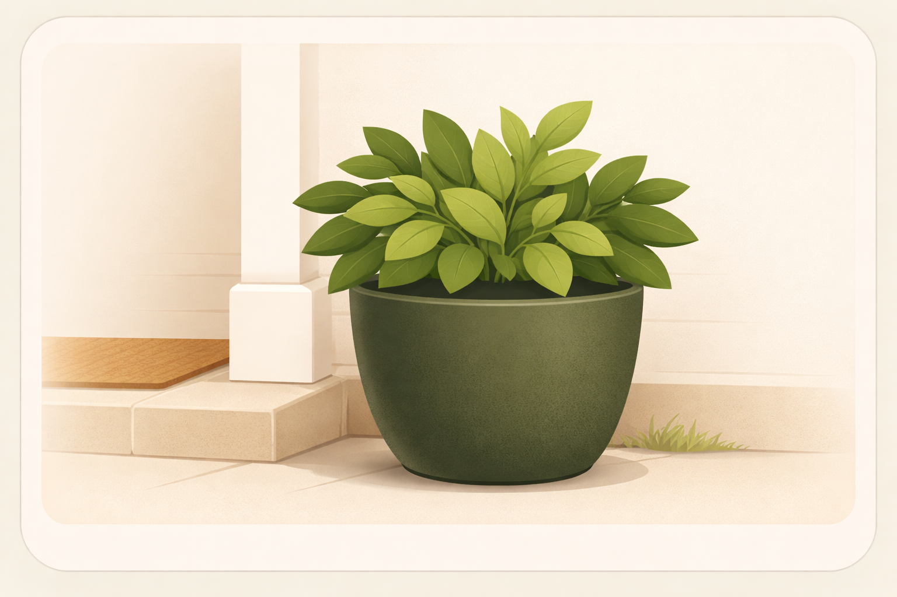
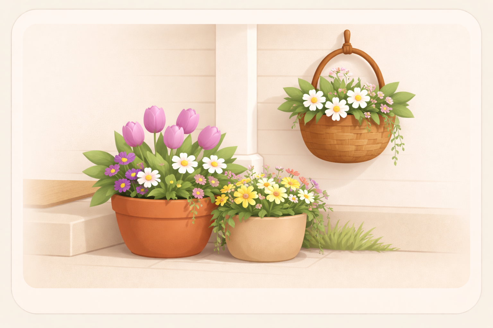
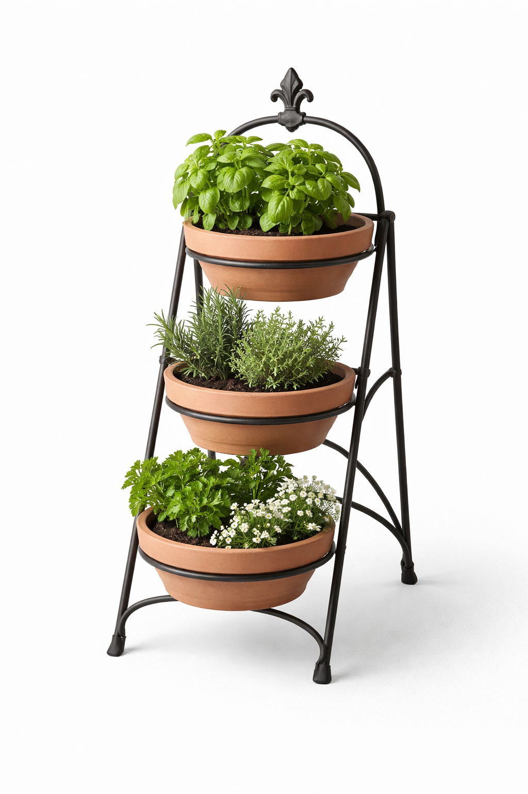
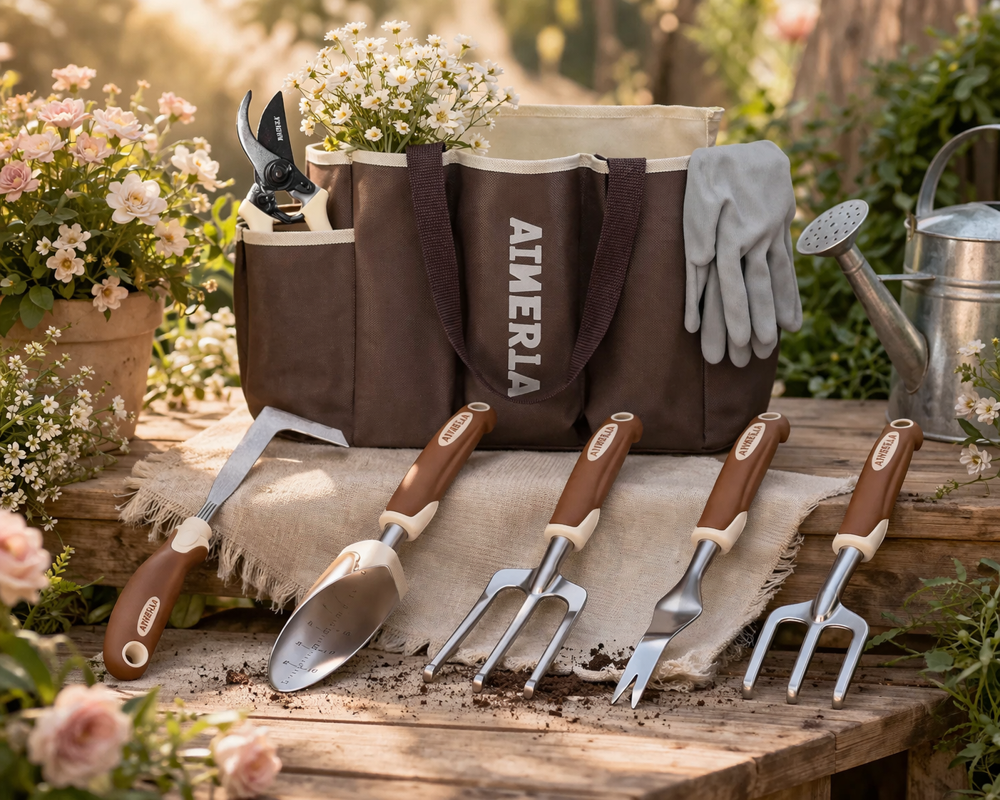
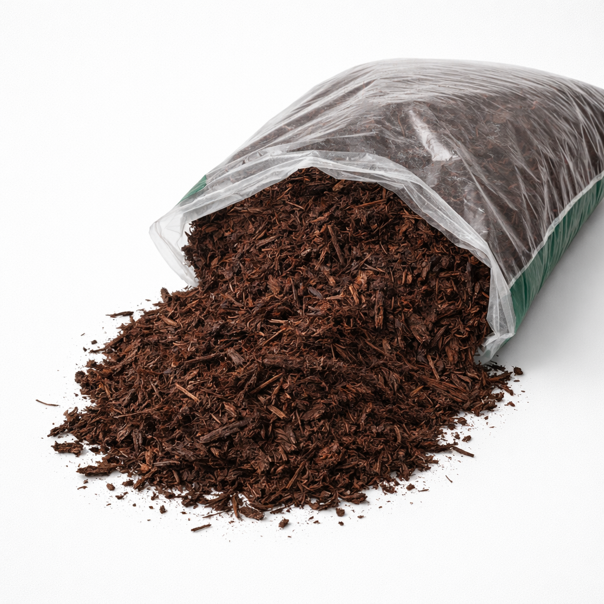
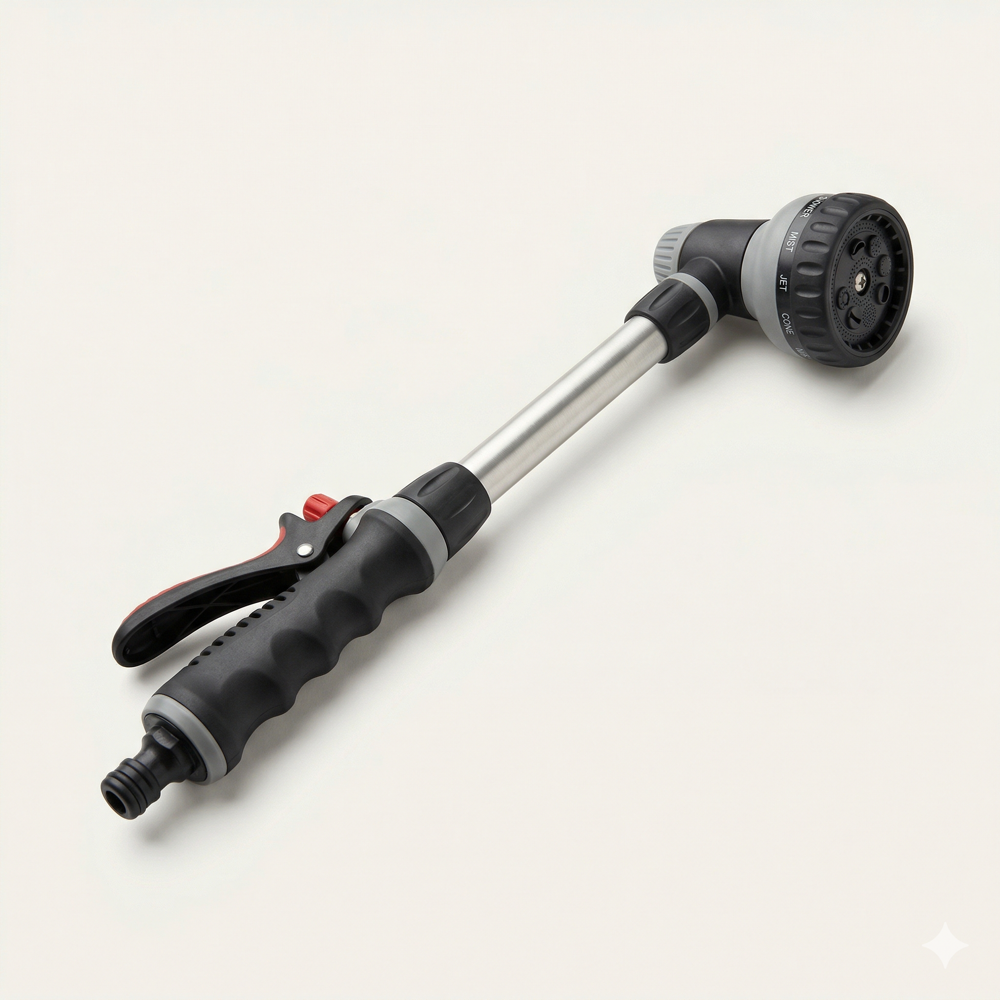

Start with one good pot near the steps
One sturdy planter gives the entry a focal point and keeps the planting scheme from feeling scattered.
Seasonal
A strong planter, a little greenery, and flowers near the steps can make the entry feel fuller and more cared for.

Flowers near the steps soften all the hard lines and make the walk up feel fuller, sweeter, and much more cared for.
This works best when the plants give the entry shape and fullness before anyone notices the exact varieties.
You do not need a full garden project. One planter, one basket, and a little greenery can carry the look.
How to try it
One sturdy planter gives the entry a focal point and keeps the planting scheme from feeling scattered.
Rounded flowers and loose greenery do the most to soften the steps without making the whole thing feel busy.
The garden tools and upkeep pieces should make the look easy to keep, not become the whole story.
Soft layers
Start with the few pieces that carry most of the visible charm.
Some Neighborhood Ideas links are affiliate links. As an Amazon Associate, Neighborhood Stewardship Project may earn from qualifying purchases.

A dark planter beside the door softens the entry and makes the whole front feel more dressed without looking overdone.

A floral basket near the steps makes the whole entry feel fuller, prettier, and a little more loved.

A greenery pot adds fullness and soft shape to the steps without asking for a whole flower-bed project.
Helpful extras
These are the behind-the-scenes pieces that keep the cute part low stress.

These are the quiet helpers that keep the soft, pretty part easy to maintain.

It is one of the fastest ways to make a modest bed feel much more finished.

The easier the routine feels, the more likely the flowers will still look nice in a normal week.
More in Seasonal Sweetness

Front Door
A better mat, warmer light, and one or two well-chosen details can make the whole front of a house feel more welcoming.
Read idea
Cute Finds
A few crisp little front-door details can make the whole house feel more cared for from the curb.
Read idea